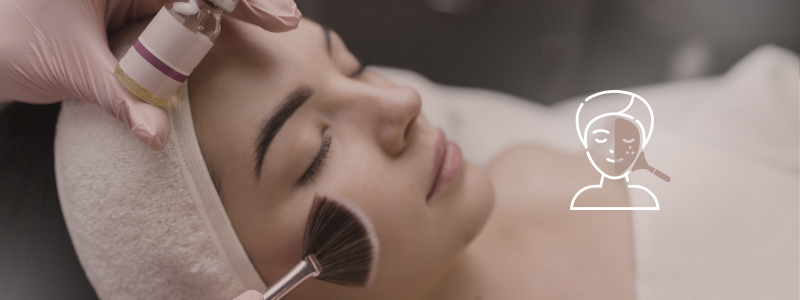

O que é?
O peeling químico é um procedimento muito utilizado na dermatologia e na
medicina estética. Esse tratamento consiste na aplicação de ácidos sobre a pele,
de forma a eliminar algumas das camadas mais superficiais da mesma. Como resultado,
obtém-se uma pele rejuvenescida, melhorando também outros aspetos como manchas, marcas de expressão,
cicatrizes de acne, dentre outras condições de pele.
O tratamento visa eliminar as camadas danificadas, promovendo o crescimento de uma nova camada da pele.
O peeling tem como objetivo acelerar o processo de renovação celular, normalizar a pigmentação da pele, atenuar marcas e reduzir rugas.
Para que serve?
O peeling químico é utilizado para:
➡️ Reduzir manchas escuras e hiperpigmentação causadas pela idade ou pelo sol (exposição solar);
➡️ Suavizar cicatrizes de acne;
➡️ Melhorar a flacidez;
➡️ Reduzir rugas (superficiais a profundas) e linhas de expressão;
➡️ Melhorar a textura da pele, deixando-a mais lisa e uniforme;
➡️ Controlar a oleosidade;
➡️ Previnir o aparecimento de cravos e "espinhas";
➡️ Atenuar poros dilatados;
➡️ Estimular a produção de colágeno, promovendo o rejuvenescimento da pele.
Como é feito?
Trata-se de um procedimento relativamente rápido e indolor, sendo realizado em consultório
sem anestesia. Os peelings faciais superficiais/médios têm uma duração média de cerca de 30 minutos,
por sessão, envolvendo fases distintas, incluindo:
➡️ Limpeza da pele - Preparar a pele e remover a oleosidade;
➡️ Proteção - Proteção dos olhos, cabelo e zonas sensíveis;
➡️ Administração do tratamento - Aplicação da solução química;
➡️ Remoção - Remoção da solução química e limpeza da pele;
➡️ Hidratação da pele - Utilização de uma solução calmante e regenerante para a pele.
Quais produtos são utilizados?
A escolha do produto a utilizar deve basear-se no fototipo de cada indivíduo e nos resultados que
se pretendem atingir.
Os peelings superficiais, como os efetuados com ácido salícilico, ácido glicólico, etc. são os que se utilizam
com maior frequência.
Vale mencionar que certos resultados apenas serão possíveis com peelings profundos, como no caso do tratamento das rugas
mais marcadas, todavia, o tempo de recuperação também aumentará.
Tipos de peeling químico
Existem 3 tipos de peeling químico (superficial, médio e profundo), que são escolhidos pelo médico especialista, conforme o tipo de pele e a gravidade dos sintomas apresentados.
O peeling pode ser efetuado em várias zonas do corpo, todavia, aquelas onde se efetua com maior frequência são as seguintes:
➡️ Rosto;
➡️ Mãos;
➡️ Pescoço;
➡️Colo;
Mediante a região, a técnica de peeling químico pode variar, sendo os seguintes os principais tipos utilizados:
Superficial
Remove a camada mais externa da pele, ideal para tratar manchas leves, poros dilatados, acne e rugas superficiais.
Médio
São utilizados ácidos que removem a camada externa e média da pele, sendo eficaz para tratar manchas mais profundas, cicatrizes de acne, rugas de expressão e certos tipos de manchas mais profundas.
Profundo
Remove as camadas de pele até ao nível interno, sendo aconselhado para pele danificada pelo sol, com leve grau de flacidez, rugas mais profundas, e cicatrizes, como as de acne ou causadas por acidentes.
Quando os resultados ficam visíveis?
Os resultados do peeling químico podem ser visíveis logo a partir da primeira sessão de tratamento.
O resultado final do peeling é visível algum tempo após o tratamento. A pele encontrar-se-á sensível e passará por um processo de descamação e regeneração celular
que poderá durar alguns dias, dependendo da profundidade do peeling.
Preparação para o peeling químico
Mediante a profundidade do peeling, poderá ser necessário efetuar uma preparação, conseguindo-se, assim,
melhores resultados e uma diminuição do risco de complicações. A preparação para um peeling facial pode
passar pela adoção de algumas das seguintes medidas:
➡️ Evitar a exposição solar;
➡️ Utilização de protetor solar diariamente;
➡️ Utilização de cremes ou loções que preparam a pele para viabilizar uma descamação uniforme no pós-peeling;
➡️ Aplicação de agentes que promovem a despigmentação da pele.
Cuidados após o peeling químico
Após o peeling químico, a pele fica muito sensível e, por isso, é recomendado evitar a exposição ao sol,
aplicar protetor solar de 4 em 4 horas e evitar tocar na área tratada. Além disso, é fundamental efetuar
uma boa hidratação da pele para mantê-la saudável e evitar o surgimento de manchas e outros problemas.
É essencial, também, proceder à lavagem da pele tratada com um sabonete neutro, para evitar a irritação da área, além de ser
aconselhável salpicar a zona com água termal, evitando assim que a pele fique vermelha e com ardência.
⚠️ Caso surja uma irritação muito acentuada, é aconselhável consultar o médico que realizou o procedimento, pois podem ser necessários
outros cuidados que envolvam a prescrição de medicamentos, por exemplo.
Efeitos colaterais temporários
É esperado que após cada sessão de peeling, a pele apresente descamação, ligeira vermelhidão e sensibilidade. Contudo, esses sintomas são transitórios e a sua duração e intensidade irá depender do tipo de peeling realizado.
Benefícios
Os benefícios apresentados pelos peelings químicos vão muito além da componente meramente estética.
Alguns dos problemas, como a acne e as suas marcas, manchas na pele, etc., podem ser extremamente
danosos para a autoestima, qualidade de vida e vida social da pessoa. Assim, além de melhorar a parte estética,
o resultado obtido também vai ajudar bastante na parte psicológica.
Quer transformar sua pele e se sentir ainda mais confiante?
Agende agora seu peeling químico e descubra os benefícios de uma pele renovada!
Entre em contato conosco e marque sua sessão!
 Agende seu horário
Agende seu horário